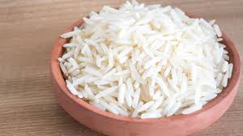

back
Plain Rice

Description:
Rice, edible starchy cereal grain and the plant by which it is produced.
Ingredients:
Instructions:
- Rinse rice
- Put rice in a pot one (1) part rice and two (2) parts water.
- Bring your rice to a boil on high heat.
- Once the water is boiling, cover the rice and bring down the heat to low.
- Let cook for fifteen (15) minutes.
- Let rest and serve.